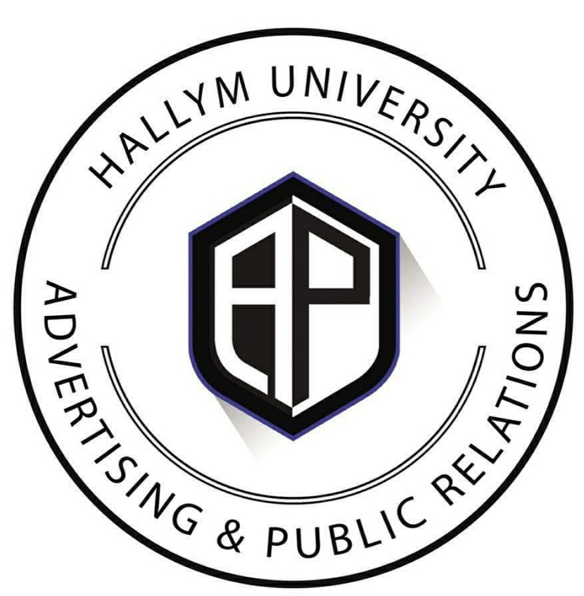

- 1. 이주성이란?
- 2. 주전공은?
- 3. 복수전공은?
복수전공은
제 복수전공은 광고홍보학과입니다.

3W로 보는 광고홍보학과
1). What
: 광고를 비롯한 홍보와 마케팅 PT등 광고와 관련된 학습을 합니다.
2). Why
: 광고에 관심이 있다면 필수 학과라고 생각합니다.
국내에서 유일하게 국제광고협회의 공식 자격증인 IAA Diploma를 수여합니다.
3). Where
: 주로 광고 계열로 갑니다.
광고대행사 또는 홍보대행사, 기업의 마케팅/광고/홍보 부서와 조사 분야로의 진출이 활발한 편입니다.